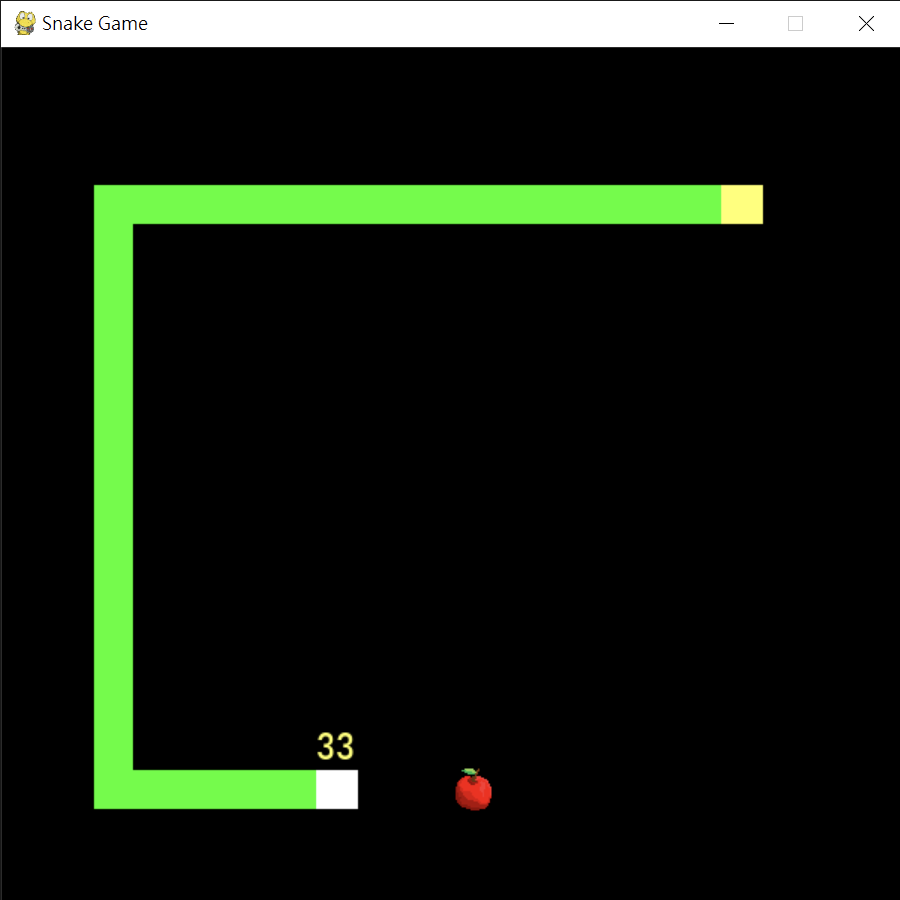

利用演算法與深度學習解決「四方位移動型自動生長機」問題

作者
陳致宇
戴予珩
指導老師
林淑玲 老師
作品摘要
你是否有聽過貪吃蛇這個遊戲？你是否有玩過這款經典的手機遊戲？現在的網路越來越發達，進而出現了非常多的電腦遊戲，但以人類而言沒辦法每個遊戲都玩到專精，也沒有時間可以一直訓練。我們希望利用一些演算法以及人工智慧深度網路技術訓練模型來實作出貪吃蛇競賽的機器人，並比較兩者的差別、強弱等。在研究中，我們利用 Python 及 Keras 套件創建模型，並參考網路上其他人寫的強化學習模型，經修改其架構、細節，製作出一個貪吃蛇遊戲的強化學習模型。最後比對不同演算法及強化學習的表現，並找到是否有些適合這遊戲的策略，以及強化學習是否適合使用在這個遊戲之中。
